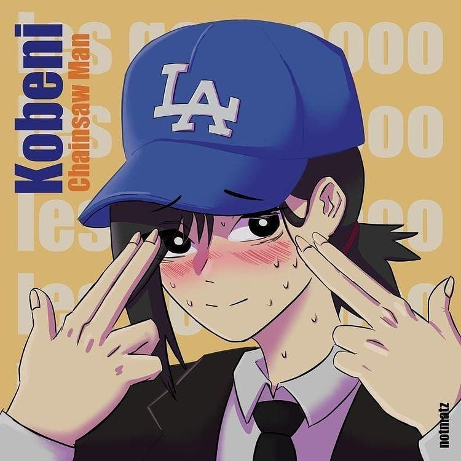

|  |
Caio nasceu dia 18/08/2005 e atualmente tem 15 anos. Caio gosta de esportes e de jogos de videogame.
Caio já estudou no Colegio CorJesu (2011), na Escola Classe 316 Sul (2012/2015), no Polivalente (2016/2017), no CEF 04 de Brasília (2018/1019) e atualmente estuda no CEMIC.
Caio, além de já ter ganhado alguns premios de aluno destaque tanto nas suas escolas quanto na escolas de línguas(CIL), ganhou medalhas na Olimpíada Brasileira de Matemática das Escolas Públicas (OBMEP), uma de bronze e uma de prata.
Caio sabe inglês muito bem, estuda alemão e é iniciante em japonês, não tem nenhum certificado ainda.
| Telefone | 61 99992-3064 |
| caiocord2005@gmail.com |
Que tal me enviar um e-mail
Voltar